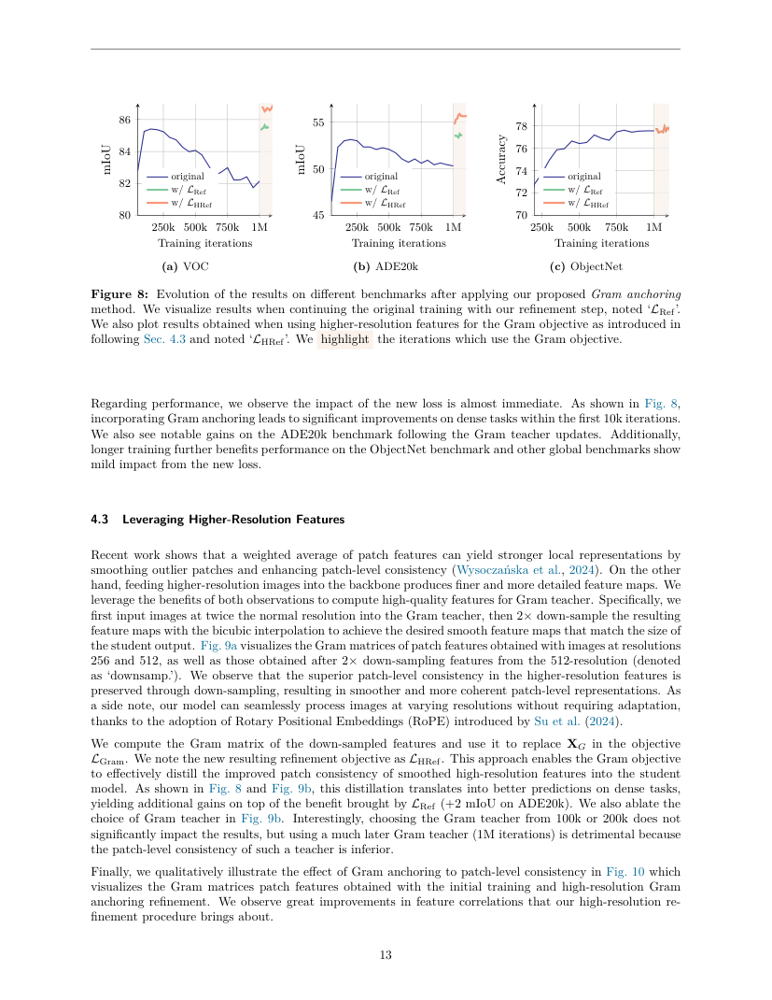
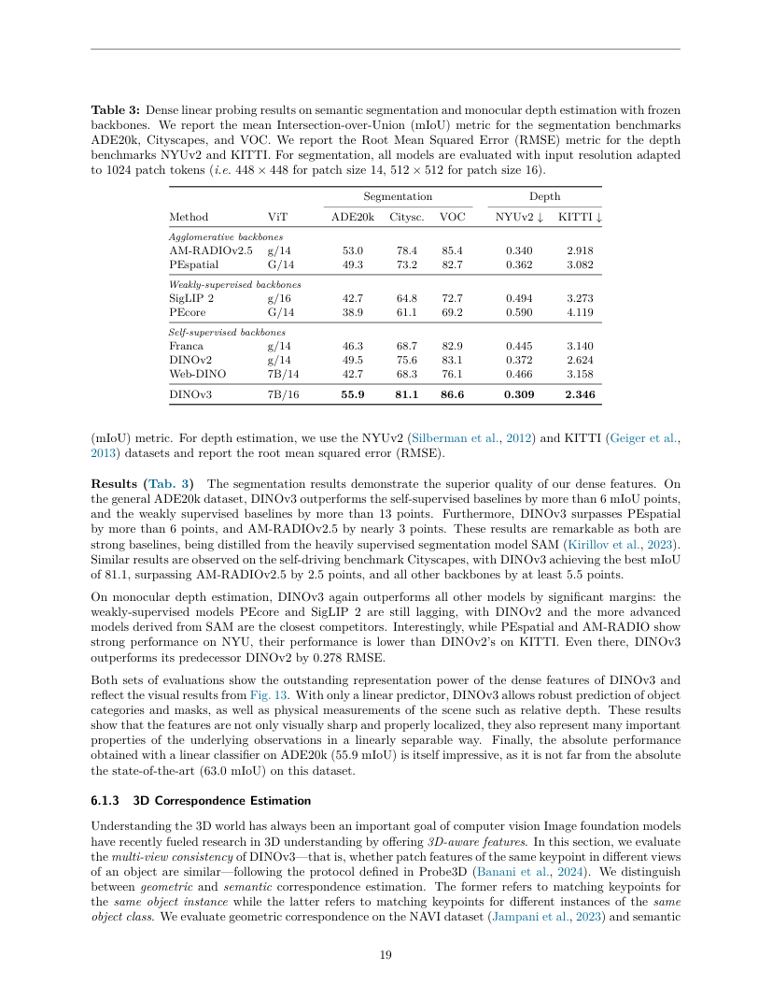
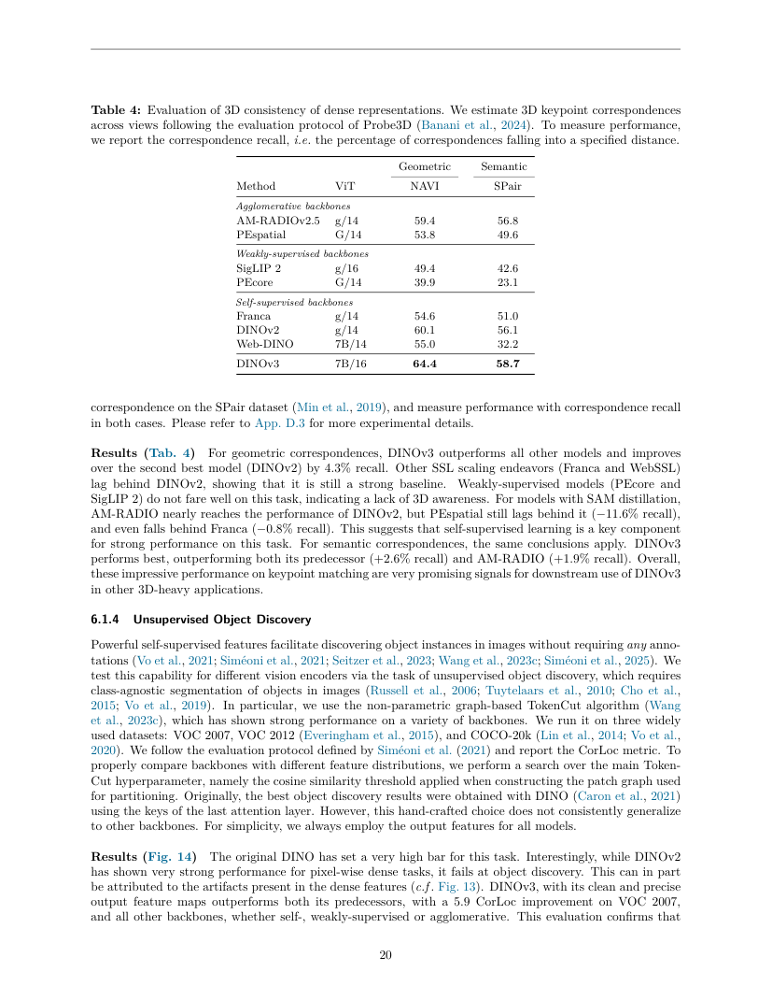

English translation pending — this page shows the Chinese original.
一句话结论
DINOv3 关注大规模自监督学习中的密集特征退化，通过 Gram anchoring 保存局部关系结构，并结合数据/模型扩展、分辨率适配与蒸馏形成视觉编码器家族。
正式发表状态与全文边界
截至本轮核验，TMLR 官方论文目录把 DINOv3 列为 2026 年 5 月正式期刊论文，官方 BibTeX 年份为 2026，并给出 Featured Certification。这个正式出版记录使其满足期刊纳入条件。
全文版本限制：OpenReview 的正式 PDF 受到验证页/限流阻塞；当前深读的是完整 67 页作者技术报告 arXiv:2508.10104v1（2025-08-13）。下面所有细节和表号归属该作者稿。来源页维持 draft，正式期刊版本的方法、数值与附录对齐仍待复核；综合页只把已核验的出版身份与明确标注的版本解读分开使用。
论文定位与问题定义
论文方向是自监督视觉表示、视觉基础模型、密集预测特征学习。其可交付产物是预训练视觉 backbone 及不同规模的蒸馏模型。输入图像经过编码器得到 CLS/global 与 patch/dense 特征；分类、语义分割、深度、匹配等任务使用各自的读出模块。
关键问题是：延长大模型训练可以改善全局分类，同时让 patch 特征变得更噪、更偏全局语义，导致密集任务退化。作者因此把训练过程拆成全局/局部联合学习、密集特征修复和后处理阶段（§3–5）。
方法概述
数据与规模
作者报告从大规模图像池构建分层聚类采样、相似图像检索和既有数据集混合。LVD-1689M 是其中大规模 curated 组成，完整训练还包含其他数据部分。短 schedule 的数据消融显示混合配方在其测量任务上更均衡（Table 1）。教师采用 ViT-7B/16，约 6.7B 参数，使用 RoPE 和 register tokens；教师结构比较列在 Table 2。
自监督目标与密集退化
基础训练继承 DINO 全局目标、iBOT 局部目标及特征分布正则。全局类别可分性与局部几何边界质量可能沿不同方向变化；只监控 ImageNet 线性分数可能错过 dense features 的退化（§3.2、§4.1）。
Gram anchoring 的具体含义
把归一化 patch 特征排成矩阵 F，F Fᵀ 描述 patch 两两之间的相似关系。锚定损失约束学生关系矩阵接近具有更好密集特征的参考教师：L_Gram ∝ ||F_s F_sᵀ − F_ref F_refᵀ||²。这个目标直接约束空间关系，给长训练提供局部结构参照（§4.2）。
高分辨率参考教师提供更细特征，下采样到学生网格后形成更稳定的 Gram 目标（§4.3）。Gram 是特征关系矩阵；三维高斯表示则是由位置、协方差和渲染属性定义的场景基元，两者承担不同功能。
后处理与部署
分辨率适配让特征适应更广输入尺度；蒸馏把大教师能力迁移到较小模型；文本对齐作为后续模块为语言接口提供额外条件（§5）。基础自监督权重的 dense features 与文本对齐版本要在使用记录中分别命名。
核心实验与结果：作者稿口径
下表数字仅对应已保存作者稿；期刊版本差异待核。
| 任务和定位 | 同表 DINOv2 g/14 | DINOv3 7B/16 | 能支持的判断 |
|---|---|---|---|
| Table 3 / p.19，ADE20k，冻结特征线性头 mIoU ↑ | 49.5 | 55.9 | 更强的局部特征可被简单头读出 |
| 同表，Cityscapes mIoU ↑ | 75.6 | 81.1 | 密集提升覆盖另一个分割场景 |
| 同表，NYUv2 RMSE ↓ | 0.372 | 0.309 | 表征也支持深度读出 |
| Table 4 / p.20，NAVI 几何对应 recall ↑ | 60.1% | 64.4% | 同实例跨视图对应有直接评测 |
| 同表，SPair 语义对应 recall ↑ | 56.1% | 58.7% | 不同实例的语义部位匹配有独立测量 |
| Table 5 / p.22，DAVIS-L J&F ↑ | 76.6 | 83.3 | 首帧条件掩码传播受益于更强 dense features |
Table 3 的分割比较固定为 1024 patch tokens；patch size 不同对应不同像素分辨率。不同模型的预训练数据、参数量和训练预算仍有差别，这些结果属于系统比较。DINOv2 原论文里的 49.0 与此处 49.5 来源于不同版本/协议，应按各表内部读数分析。
Figure 8（p.13）展示 Gram refinement 后 VOC/ADE20k 曲线提升而全局 ObjectNet 变化较小，支持对局部结构进行专门修复的动机。Table 4 使用 Probe3D 对应评测；附录 D.3 明确匹配设置。这里提供了三维相关表示证据，完整三维高斯场景的语义分割仍需要单独系统实验。
作者稿 Table 3 的 Cityscapes 单元格为 DINOv3 81.1、AM-RADIOv2.5 78.4；相邻正文写了“2.5 points”。表格与文字的差值口径存在冲突，本页保留原始单元格，不采用该正文差值。
关键图示



局限、反证与复现边界
- 模型规模混杂：教师结构和训练数据同时改变，v2/v3 主表比较包含多因素增益。Gram 消融对局部修复的归因更直接。
- 局部语义的可视化：PCA 展示可以选择分量符号与颜色组合；漂亮颜色图需要定量分割、对应和跨视图测试共同解释。
- 时间建模：作者稿视频分类仍需时空 attentive probe；SSv2 等运动敏感任务中，专门视频模型提供重要对照。
- 任务标注许可：线性分割头和深度头需要标注训练；视频传播有首帧 mask。自监督 backbone 与完整任务系统应分账。
- 版本与运行：当前正式身份已核验，期刊 PDF 全文对齐阻塞；未做 GPU 运行、数据集复现或训练成本实测。
对当前 wiki 判断的影响
阅读路径为 DINO → DINOv2 → 本页，概念定位汇入 Visual Representations and Backbones 和 DINO 家族：自监督视觉表示与预训练骨干。
用户的三维高斯语义分割兴趣记录为 DINO 密集特征如何迁移到三维高斯语义分割？。作者稿的 NAVI/SPair 测试提供可探索的表示动机，三维高斯特征蒸馏、类别命名和遮挡边界仍是明确待验证的系统假设。
原始链接与本地证据
- 本地全文：
raw/ingest/2026-09-27-dinov3/author-paper.pdf；完整文本、逐页阅读范围与 SHA-256 见同目录read-manifest.json。 - 家族关系：DINO 家族：自监督视觉表示与预训练骨干；正式版本核验边界见本文开头。